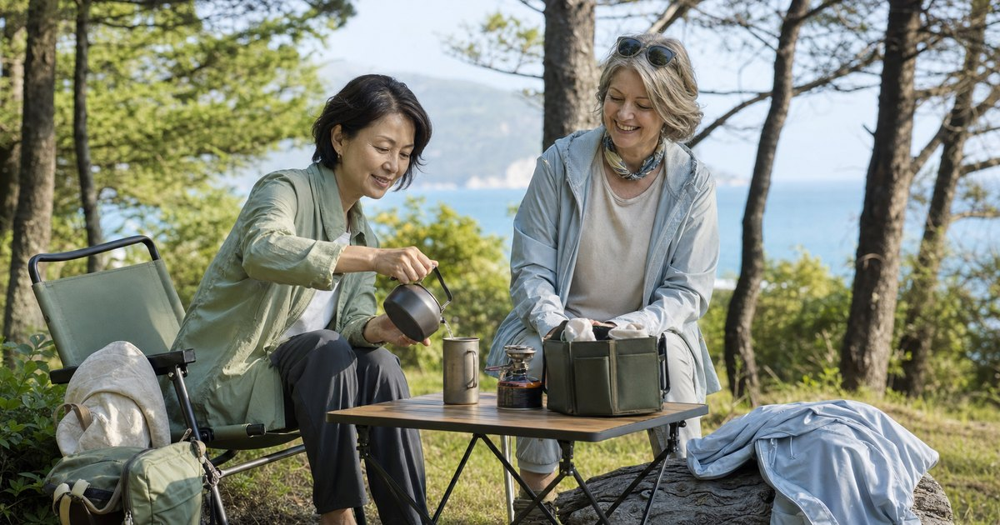

50+ 女性輕露營第一份裝備清單：椅凳、收納與防曬外套怎麼選
第一次輕露營不用一次買齊全套裝備。從坐得舒服、收得乾淨、防曬保暖與雨天備案開始，整理熟齡女性更輕鬆的戶外裝備順序。

先決定你是哪一種輕露營
買裝備前，先把目的說清楚。不同情境需要的東西差很多，若把所有情境混在一起，預算和車廂空間都會很快失控。
- 午後野餐先處理椅子、桌面、保冷與防曬。
- 車露過夜再補收納、睡眠保暖、照明與雨天備案。
- 朋友團露先準備個人椅凳、杯具、小包與外套。
第一層：坐得舒服，比拍起來漂亮更重要
50+ 女性挑露營椅，不要只看外型。椅面高度、背部支撐、扶手位置、起身是否吃力，會直接決定你在戶外能不能放鬆。
campingflying 想露飛飛適合從露營小物、鈦杯、椅凳與桌邊收納切入。ANPING 安平、江大露營裝備與尋露戶外用品館則可作為基礎裝備與收納配件的補充比較。
第二層：收納要讓你不用找東西
輕露營最容易讓人煩躁的，不是東西不夠，而是東西太散。收納的目的不是把東西藏起來，而是讓你坐下後，每一樣小物都知道在哪裡。
- 桌面即用：鈦杯、餐具、濕紙巾、垃圾袋、小燈。
- 營地收納：裝備袋、收納箱、椅凳配件、桌邊袋。
- 個人備案：防曬外套、保暖層、雨具、個人藥包。
第三層：外套要同時處理防曬、溫差與體面感
熟齡女性的戶外外套，不能只看有沒有防曬。真正好用的外層要能在日曬、冷氣、風、傍晚溫差與回程通勤之間切換。
Litume 意都美適合看戶外服飾、排汗衣、防水雨衣褲、保暖與旅遊用品。UV100 則適合春夏防曬、機車通勤、旅行與戶外活動。
FAQ
50+ 女性第一次輕露營，最先買哪三類裝備？
先買坐得舒服的椅凳與桌面、能把小物收整乾淨的收納袋或箱包，再準備防曬與保暖外層。先處理舒適、秩序與天氣變化，比一次買齊大型帳篷更實用。
輕露營需要一開始就買高價品牌嗎？
不一定。高價品牌適合已確定會長期露營的人。第一次可以先從椅凳、收納、杯具、防曬外套與雨天備案開始，觀察自己的使用頻率與舒適需求後再升級。
熟齡女性露營裝備要避開哪些錯誤？
常見錯誤是只看外型、忽略重量、收納體積、坐姿高度、清潔方式與日曬雨天備案。真正會影響體驗的，通常是搬運是否輕鬆、是否容易拿取，以及回家後是否好整理。
下一步建議
若你是第一次準備輕露營，先從椅凳、收納、防曬外套與個人小物開始，讓自己在戶外坐得住、拿得到、回得來。
本文含品牌／商品導購連結；若你透過部分商品連結前往選購，Elite Fashion 可能取得合作收益。本文仍以編輯判斷與使用情境整理為主，價格、規格、活動與庫存請以商品頁公告為準。